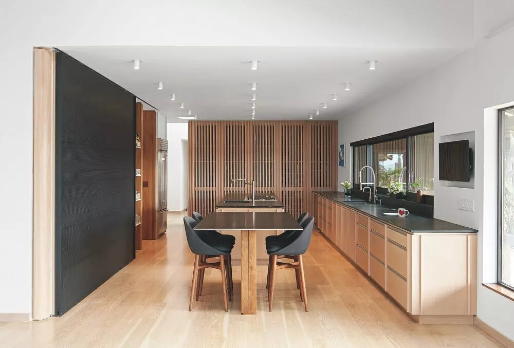
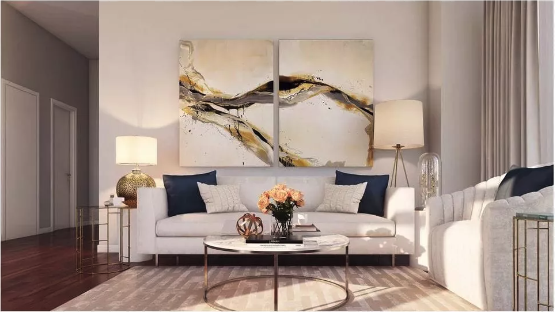
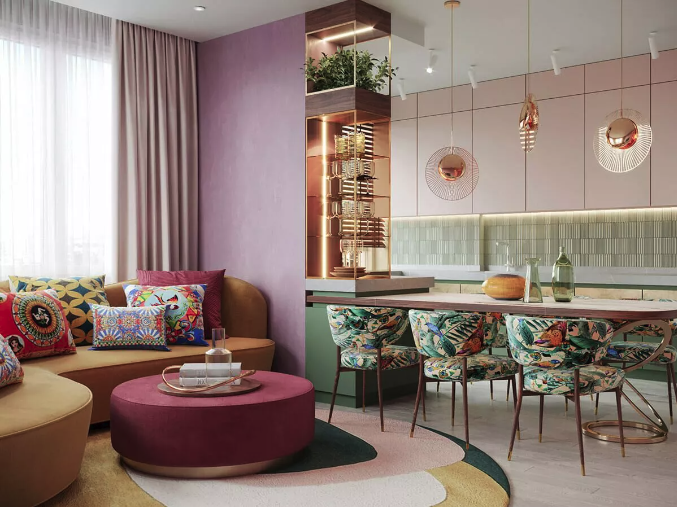

Welcome to my Home Decoration Website
As part of the education to become a skilled web developer, this website is designed to show different choices that are essential for good web design. The task is to create a website for home decor. In this delivery, color selection and analysis of colors and textures have a particular focus. Further down you can see some examples of interior decoration in the home.
Decor examples
-
A functional and beautiful kitchen
Decor description:
The kitchen has a beautiful symmetry. There is good lighting, many light bulbs in the ceiling. Above the kitchen counter there is a window with a beautiful view. The colors are pleasant and calm.
Decor photo:
 -
Sofa group with tasteful design
Decor description:
The sofa group is tastefully furnished. The colors in the room complement each other. High ceiling height gives the room an airy feel. The base for the table has dark and light stripes that bring life to the room.
Decor photo:
 -
A delicately decorated living room
Decor description:
A tinge of pink color creates the impression of warmth and comfort. The colors pink, brown and green complement each other well. A large window provides good light conditions.
Decor photo:

Some words about good design
Design is not an exact science, in the sense that you cannot always say that something is bad or good. But sometimes you can do it more than other times.
The human eye searches for harmony and symmetry. Balance can be another word for symmetry.
Colors on a website are about psychology. Psychology is not an exact science either, but we have to deal with it nonetheless, because emotions are awakened by colors, and we often wish that the person looking at the website should feel what we want them to feel. In this sense, you can say that color selection is about manipulation.
One often distinguishes between "warm" and "cold" colors.
Brown is a natural color, which is associated with relaxation, endurance, reliability, confidence, warmth, comfort, safety, and it is considered to be conventional and sometimes sophisticated. These are key words that I feel fit in well for a website that will be about interiors.
I present three examples of interiors. These are framed in a greyscale frame. This has been done
deliberately because
gray tends to be a neutral color, preferably a bit conservative, but also because the message is
serious.
I have used white color as background for the decor examples. White symbolizes simplicity and purity. Simplicity I feel harmonizes well with the principle "keep it simple". The links in the menu alternate between white and black, depending on whether the status is "hover" or not.
The basic color in the logo is brown, surrounded by a lighter part with the light brown text "Home decoration", and it harmonizes well with the fact that brown and shades of brown have been chosen for the entire website. The H1 headings are also in light brown, on a light background.
As a principle, a color on a web page should be used on more than one element. This principle has been applied to this website. It gives an impression of visual consistency and predictability. Safety in a way.
I have used "shades and tints of brown". It can be difficult to make a strict distinction between brown and orange. But both colors have a lot in common. They are both two warm colors. They symbolize kindness and optimism. I have used both "shades" and "tints" of brown. Mostly "shades" in the menu and footer. And mostly "tints" in the decor examples.
I use an analogous color scheme. Colors that stand next to each other in the color wheel. The purpose is to create mutual harmony between the various sections on the website. I feel that a monochromatic color scheme would create too little contrast. It becomes a bit too minimalistic in this context. I use an analogous color scheme to create the same undertone for the entire website. If I were to use complementary colors, I feel the tension would be stronger. A home should be a place where there is harmony, not both heat and cold. By using split complementary colours, the tension would be reduced, but I feel that this tension is also unnecessarily large in this context. A triadic color scheme could perhaps have been an alternative, but again consideration for calm, warmth and harmony in the home wins.
I have not used textures on the page. Or possibly you could call the grid in the logo textures. Nor have I felt the need to highlight any section of the website over others.
In the lesson, it is said that "shapes" can bring "interesting effects" to a website. But nothing is said about what is interesting and how the effect may be perceived by people. There can be very individual perceptions of what an effect of something is like. In any case, I feel that it will be excessively experimental to try this.
My design choices
Keep it simple
It is a general principle in web development to keep things simple. This should also apply to color choices. In a way, it is made easy for the user if he only needs to deal with a limited number of colours.
Shades and tints of brown
I have created a simple logo with inspiration from this website: https://www.brandcrowd.com/maker/logo/pantheon-architecture-building-253863?isVariation=True . I have made some changes and customization.
I got inspiration for the color choice here: https://color.adobe.com/nb/explore.
It seems that brown is a popular color when it comes to interiors, see https://www.bhg.com/decorating-with-brown-trend-6835454.
Kristina McGuirk writes in the section «Why Shades of Brown Are Seeing a Resurgence”:
«Brown was a memorable part of both 2000s and 1970s decor, and now similar influences are helping bring the color back. Like the 2000s, the shift toward warmer colors comes, in part, because we’re responding to the prolonged uncertainty of the pandemic by incorporating more comforting colors into our homes”.
Jessica Bennett recently wrote an article "18 Living Room Ideas with Brown Couches That Aren't Boring at All": https://www.bhg.com/rooms/living-room/ways-to-decorate-with-a-brown-sofa/.
This may indicate that brown as a basic color is about to have a renaissance in interior design.
In the article "5 Kitchen Color Trends Designers Recommend for 2022 and Beyond", see https://www.bhg.com/kitchen/color-schemes/inspiration/kitchen-color-trends/. Jessica Bennett writes, among other things, that natural earth colors are on the rise as a trend:
“5. Rich Earth Tones Vroom foresees kitchen color trends transitioning from softer whites and blues and toward warm, grounded hues like terra-cotta, blush, and even plum. "The beachy or farmhouse color palettes are taking a step back, and those rich earthy tones are stepping up," she says. You can also expect to see more natural wood cabinetry in kitchens as homeowners embrace the texture and color inherent in the wood”.
Textures must have a purpose...
...and, to be honest, I haven't found any element where texture would have any positive effect.
Possibly a negative
effect. As a distraction. As an opponent of the "keep it simple" principle. I am open minded to
suggestions that indicate I am wrong.